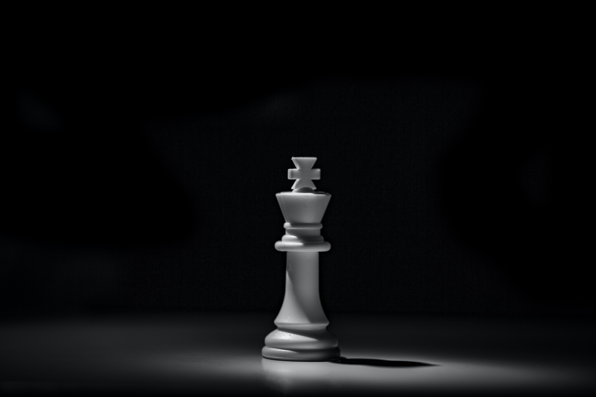
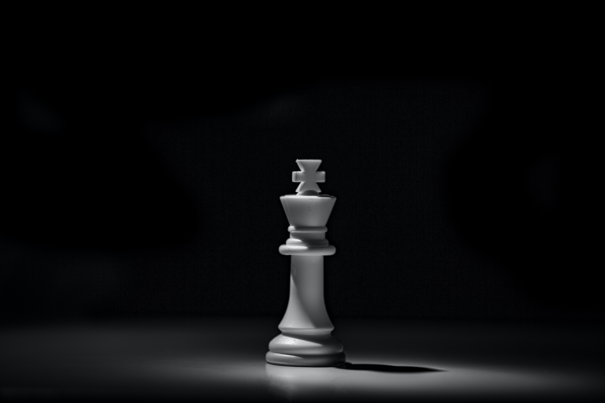
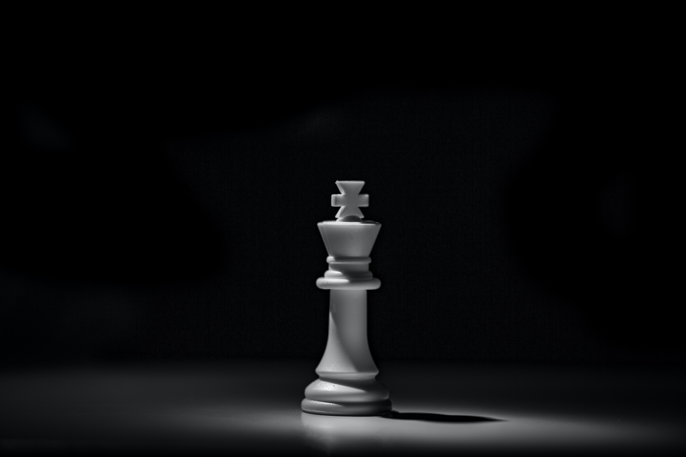

Chess art is interesting because it brings together the smart thinking and strategic aspects of the game with the creative and expressive elements of art. It combines two different areas that have a long and important history. Chess pieces have distinct shapes and qualities that can be shown in different artistic ways. This lets artists convey deeper messages and explore various ideas. The way chess pieces are visually represented often shows their strategic importance and how they move in the game. This creates a visual language that appeals to both chess players and people who enjoy art.
